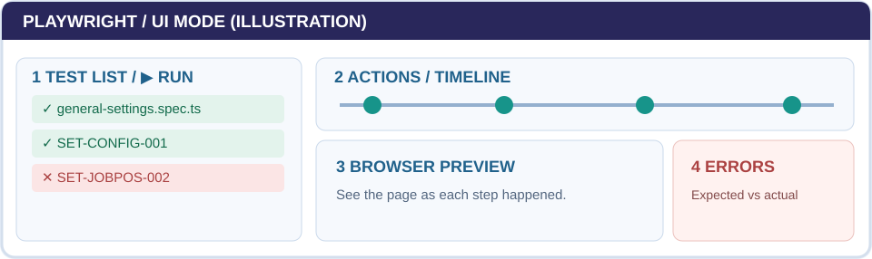
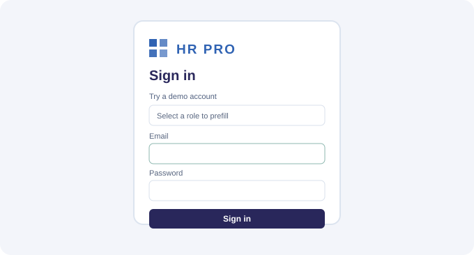

Automated testing,
made straightforward.
A practical help center for the team's Playwright automation system—not a project report.
Install the project
Install VS Code, Git and Node.js. Ask for repository access and an approved non-production HR PRO testing environment.
Use a folder where you want the project saved.
git clone https://github.com/nitsuwa/hr-pro-automation.git cd hr-pro-automation git fetch origin git switch --track origin/qa/setup-handoff-2026-10-19 npm ci npx playwright install chromium
If the branch already exists locally: git switch qa/setup-handoff-2026-10-19.
playwright.config.ts. Verify that the actual test URL (E2E_BASE_URL, default HR PRO prototype) is approved. Some scripts create, edit and delete shared data. Never use real employee records or production.playwright.config.ts defaults to https://hrproprototype.netlify.app. The E2E_BASE_URL variable may override it; E2E_ENV=staging alone does not ensure test-data safety. Use approved fictional QA data and never run data-changing checks against production.Run a test in UI Mode
npm run test:ui:setup
Expand a file in the left panel (e.g., general-settings.spec.ts).
Run just one scenario at first.
Green = checks passed. Red = investigate; it may be a test or data issue, not necessarily an HR PRO defect.
Recognize the Playwright window
Panel layout is illustrative; UI Mode can vary slightly by version.
npm run test:ui:smoke · npm run test:setup · npm run test:report
If a test is red
Look for Expected, Received and the source line.
Was a button renamed? Was prerequisite data missing? Was the saved result actually wrong?
Fix incorrect locators or data; preserve correct business assertions and report application defects.
Record the test ID and trace/screenshot in the execution log.
toHaveCount(1) to toHaveCount(2) would hide the defect.
Create or extend a test
Identify exact expected behavior and test prerequisites.
Confirm the real buttons, labels and save/approval behavior.
Look in playwright/pages/ and playwright/fixtures/.
Create tests/regression/setup/<feature>.spec.ts, or extend a similar file. Add expect(...) and verify saved data after reopening.
Open Setup UI Mode and classify the result.
import { test, expect } from '../../../playwright/fixtures/hrpro.fixture';
test('QA-START | Settings is visible', async ({ page, loginAs }) => {
await loginAs('systemAdmin');
await page.goto('/settings');
await expect(page.getByRole('button', {
name: 'Organization Setup'
})).toBeVisible();
});This is a syntax tutorial, not a complete Excel acceptance scenario.
Verify a real pass or fail
Do not call a scenario complete just because Playwright shows a green check or an AI assistant says the code looks correct. A passing test means only the assertions in that script passed.
Read the Excel scenario and preconditions. “Clicked Save” is an action—not an expected business outcome.
Find expect(...). Does it check saved data, correct error feedback and role access when required? If not, treat coverage as partial.
Use UI Mode Actions, preview and Errors. For changed data, reopen/reload and confirm persistence. Use an authorized QA environment.
PASS: requirement verified. TEST ISSUE: wrong locator or data. APP DEFECT: accepted behavior violated. BLOCKED/PARTIAL: no valid end-to-end evidence.
Capture test ID, expected/actual, environment/date, trace or screenshot and a relevant GitHub issue in docs/QA_EXECUTION_LOG.md.
toHaveCount(1) red. Changing it to two hides a real bug.AI can draft tests. The QA team must validate them.
tests/regression/setup/catalog-duplicates.spec.ts, find SET-LOANS-002, and verify the existing no-duplicate count assertion. The workbook's visible error-message requirement still needs a separate grounded assertion. Never invent alert text.Know the project folders
Save and share a new test with GitHub
GitHub is where the QA team keeps test scripts. A branch is your safe working copy; a commit saves your changes; a pull request asks a teammate to review them.
Start from the approved QA branch, not production. Check git status before switching; do not discard existing changes.
Use a name such as qa/check-employee-search to keep your work separate.
Review actual HR PRO behavior and the assertions. Record expected versus actual results in the execution log.
Commit only intended scripts and safe data, then push your branch.
Use Compare & pull request, select the approved target branch, include the test ID, result, and limitations. A reviewer checks before merging.
git status git fetch origin git merge --ff-only origin/qa/setup-handoff-2026-10-19 git switch -c qa/check-employee-search # Make changes, verify the test, then: git add tests/regression/setup/employee-search.spec.ts git commit -m "test: cover employee search" git push -u origin qa/check-employee-search
HTML: open this page locally after cloning, keeping the assets/ folder beside it. Word: use the offline file provided in the handoff ZIP. Repository: access the source and send reviewed improvements.